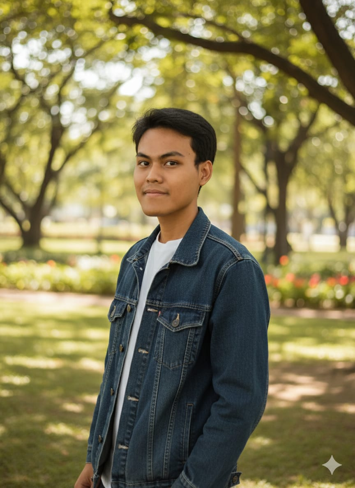

🚀 Workshop Web Dev
•
Universitas Lamappapoleonro
Naulan Darmawan
Mahasiswa STMIK PPKIA Pradnya Paramita
Role & Skills
Connect

Mahasiswa STMIK PPKIA Pradnya Paramita
Role & Skills
Connect
Struktur & Konten
HTML (HyperText Markup Language) adalah kerangka website. Tugasnya menjelaskan "Apa saja yang mau diisikan kedalam website".
Gaya & Tata Letak
CSS (Cascading Style Sheets) adalah desainer. Tugasnya mengatur "Kita mau hias website secantik apa?".
Sebelum menulis kode, kita harus paham pembagian ruangnya. Kita akan menggunakan konsep Container (Wadah).
Strategi Koding:
Kita mulai dari kotak terluar (Merah), lalu membaginya menjadi dua (Biru & Hijau). Terakhir, kita rapikan isi kotak Biru menggunakan kotak Kuning agar posisinya pas di tengah (Vertikal & Horizontal).
Kita siapkan kotak kardus besar untuk membungkus semuanya.
<body>
<!-- Wadah Utama -->
<main class="layar-penuh">
<!-- Nanti isi website masuk di sini -->
</main>
</body>Buat ruangan kiri. Langsung kita isi Header (Logo) dan Footer (Copyright).
<main class="layar-penuh">
<section class="sisi-kiri">
<header>
<div class="logo">Naulan.Dev</div>
</header>
<!-- Nanti Wrapper di sini -->
<footer>
<small>Dibuat di Malang ~ 2025</small>
</footer>
</section>
</main>
Di antara Header dan Footer, kita buat
div class="konten-wrapper". Ini kunci agar konten bisa
di tengah.
<!-- Di antara Header & Footer -->
<div class="konten-wrapper">
<div class="identitas-block">
<img src="assets/foto-profil.png" class="avatar" />
<div class="teks-identitas">
<h1>Naulan Darmawan</h1>
<p class="jabatan">Mahasiswa & IT Enthusiast</p>
</div>
</div>
<p class="bio">Saya suka menjembatani...</p>
<!-- Masukkan Skills & Tombol di bawah ini -->
</div>Lengkapi isi wrapper dengan skill tags dan tombol aksi.
<div class="skills-container">
<span class="tag">HTML5 & CSS3</span>
<span class="tag">UI Design (Figma)</span>
<span class="tag">JavaScript</span>
</div>
<div class="tombol-group">
<a href="CV.pdf" class="btn-utama">Download CV</a>
<a href="#" class="btn-sekunder">Lihat Project ↗</a>
</div>Buat section kanan berisi 4 gambar. Nanti CSS Grid yang akan menyusunnya.
<!-- Setelah tutup section kiri -->
<section class="sisi-kanan">
<img src="https://picsum.photos/id/10/200/300" />
<img src="https://picsum.photos/id/12/800/400" />
<img src="https://picsum.photos/id/14/500/500" />
<img src="https://picsum.photos/id/16/600/900" />
</section>
Saat ini tampilan HTML kita masih berantakan (numpuk ke bawah). Kita akan rapikan secara bertahap.
Ikuti urutan ini dan jangan lompat-lompat ya!
Pertama, kita atur agar halaman tidak bisa discroll dan membagi layar menjadi dua (Kiri & Kanan).
* {
box-sizing: border-box; /* Wajib: Biar padding ga ngerusak ukuran */
}
body {
margin: 0;
font-family: "Outfit", sans-serif;
color: #1a1a1a;
/* KUNCI FULL SCREEN: */
overflow: hidden; /* Matikan scrollbar */
height: 100vh; /* Tinggi mentok layar monitor */
}
.layar-penuh {
display: flex; /* MANTRA: Susun ke samping */
height: 100vh;
width: 100%;
}Refresh browser. Konten harusnya sudah berjejer ke samping (kiri teks, kanan gambar), tapi ukurannya masih berantakan.
Sekarang kita tentukan lebar wilayahnya. Kiri 40%, Kanan 60%.
.sisi-kiri {
flex: 4; /* Lebar 40% */
background: #fff;
padding: 30px 50px; /* Jarak dalam biar lega */
/* SUPAYA HEADER DI ATAS & FOOTER DI BAWAH: */
display: flex;
flex-direction: column;
justify-content: space-between;
height: 100%;
}
.sisi-kanan {
flex: 6; /* Lebar 60% */
background-color: #f0f0f0;
}
1. Header (Logo) nempel di atap.
2. Footer (Copyright) nempel di lantai.
3. Konten tengah masih "terbang" gak jelas posisinya.
Ini trik paling penting! Kita suruh .konten-wrapper untuk otomatis mencari posisi tengah.
.konten-wrapper {
width: 100%;
max-width: 480px; /* Batasi lebar biar enak dibaca */
/* MANTRA TENGAH VERTIKAL: */
margin-top: auto;
margin-bottom: auto;
display: flex;
flex-direction: column;
justify-content: center;
}
.logo {
font-weight: 800;
font-size: 1.2rem;
letter-spacing: -1px;
}Foto, Nama, dan Bio sekarang harusnya mengapung persis di tengah-tengah (antara Header dan Footer). Keren kan?
Gambar di kanan pasti masih berantakan/gepeng. Kita rapikan pakai CSS Grid agar jadi kotak 2x2.
.sisi-kanan {
/* Update styling sisi kanan yg tadi: */
display: grid;
grid-template-columns: 50% 50%; /* 2 Kolom */
grid-template-rows: 50% 50%; /* 2 Baris */
height: 100vh;
gap: 0;
overflow: hidden;
}
.sisi-kanan img {
width: 100%;
height: 100%;
object-fit: cover; /* PENTING: Biar gambar ga gepeng! */
display: block;
transition: 0.5s;
}Gambar di kanan sekarang harusnya rapi membentuk kotak 2x2 dan memenuhi layar. Tidak ada gambar yang gepeng!
Layout sudah jadi! Sekarang tinggal "makeup" elemen kecil: Foto profil bulat, tombol keren, dan hover effect. Salin semua ini ke bagian bawah CSS kalian.
/* --- COPY SEMUA INI DI BAWAH --- */
/* Foto & Nama Sebelahan */
.identitas-block { display: flex; align-items: center; gap: 20px; margin-bottom: 20px; }
.avatar { width: 70px; height: 70px; border-radius: 50%; border: 3px solid #f3f4f6; object-fit: cover; }
/* Typography */
.identitas-block h1 { font-size: 1.6rem; margin: 0 0 5px 0; line-height: 1.1; }
.jabatan { margin: 0; color: #666; font-weight: 600; font-size: 0.9rem; }
.bio { color: #555; line-height: 1.6; margin-bottom: 25px; font-size: 0.95rem; }
/* Skill Tags (Pill Shape) */
.skills-container { display: flex; flex-wrap: wrap; gap: 8px; margin-bottom: 30px; }
.tag { background: #f3f4f6; color: #374151; padding: 6px 14px; border-radius: 50px; font-size: 0.75rem; font-weight: 600; }
/* Tombol Keren */
.tombol-group { display: flex; gap: 12px; align-items: center; }
.btn-utama { background: #1a1a1a; color: white; padding: 12px 24px; border-radius: 8px; text-decoration: none; font-weight: 600; font-size: 0.9rem; transition: 0.3s; }
.btn-sekunder { background: #f3f4f6; color: #1a1a1a; padding: 12px 24px; border-radius: 8px; text-decoration: none; font-weight: 600; font-size: 0.9rem; transition: 0.3s; }
.btn-utama:hover { background: #333; }
.btn-sekunder:hover { background: #e5e7eb; }
footer { color: #999; font-size: 0.75rem; }
/* Efek Zoom Gambar saat Mouse Masuk */
.sisi-kanan img:hover {
filter: grayscale(0%);
z-index: 2;
transform: scale(1.05);
box-shadow: 0 10px 20px rgba(0, 0, 0, 0.3);
}Terakhir, tambahkan ini agar website kita bisa discroll saat dibuka di HP (layar kecil).
@media (max-width: 900px) {
body { overflow: auto; height: auto; } /* Nyalakan Scroll */
.layar-penuh { flex-direction: column; height: auto; } /* Susun Atas-Bawah */
.sisi-kiri {
padding: 40px 25px;
order: 2; /* Pindah ke bawah */
height: auto;
justify-content: flex-start;
gap: 40px;
}
.konten-wrapper { margin: 0; max-width: 100%; }
.sisi-kanan { height: 50vh; order: 1; } /* Pindah ke atas */
.identitas-block { flex-direction: column; text-align: center; }
.tombol-group { justify-content: center; }
}